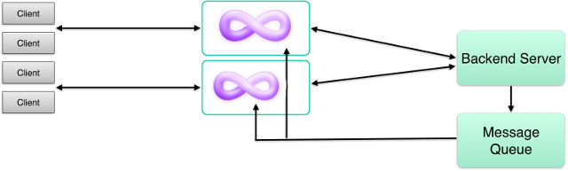

Published messages are delivered in the order they are received (per channel), so if you want clients to receive messages in-order then all you need to do is publish messages to P-8 in-order.
However, publishing messages to P-8 in-order may not be easy if you publish from multiple threads or servers. To make in-order delivery easier in those situations, P-8 can reorder messages for you, if you include sequence IDs in your messages:
{
"channel": "mychannel",
"id": "the ID for this item",
"prev-id": "the ID of the item that came before this one",
"formats": {
...
}
}
The id and prev-id values of a message are arbitrary strings, that P-8 uses to sort out the ordering of messages. If P-8 receives a message with a prev-id that it doesn’t recognize, then it buffers it until it receives a message whose id matches the value, at which point it sends out both messages in the right order. If the expected message is never received, the buffered message will eventually be delivered anyway (around 5-10 seconds later).
Note that while using sequence IDs can improve the in-order delivery of messages that P-8 receives out of order, they alone do not guarantee in-order delivery. The first message received for a newly subscribed channel is always delivered immediately, regardless of prev-id value. Also, as mentioned above, if expected messages aren’t received in time then buffered out-of-order messages will be sent anyway.
To absolutely guarantee in-order delivery without any gaps, you need to use sequence IDs along with Reliability.
If you are already publishing messages in-order to P-8 and are only concerned about gaps, then you may want to disable sequence buffering by setting no-seq to true:
{
"channel": "mychannel",
"id": "the ID for this item",
"prev-id": "the ID of the item that came before this one",
"no-seq": true,
"formats": {
...
}
}
This way, sequence IDs can be used for Reliability, and messages that follow publish gaps won’t be delayed in processing.
By default, P-8 caches message IDs for a short period of time, and will drop a message if its ID is found in the cache. To use this feature, all you need to do is set an ID on each message (see Sequence IDs). It is not necessary to set a Previous ID.
This feature is mainly useful if you have an architecture with redundant publish paths. For example, you could set up two message brokers behind P-8 and send each message through both brokers for high availability. P-8 would receive each message twice, but only process each message once. If one of the brokers fails, messages would still be received from the other.
For HTTP streaming and WebSocket connections, it is usually desirable to send keep-alive packets periodically, so that idle connections aren’t timed out by clients or routers. P-8 has built-in support for sending such packets.
For HTTP streaming, include a Grip-Keep-Alive response header:
HTTP/1.1 200 OK
Grip-Hold: stream
Grip-Channel: mychannel
Grip-Keep-Alive: \n; format=cstring; timeout=30
For example, the above response would tell P-8 to send a newline whenever the stream has been idle for 30 seconds. The format field can be set to raw (data sent as-is; this is the default if omitted), cstring (data is backslash-escaped, useful for sending lines or multi-lines), or base64 (data is Base64 encoded, useful for sending binary data).
For WebSockets, send a control message of type keep-alive:
c:{"type": "keep-alive", "content": "{}", "timeout": 30}
For example, the above control message would tell P-8 to send a message containing {} whenever the connection has been idle for 30 seconds. To send binary content, set content-bin to a Base64-encoded value instead of setting content. To send message types other than TEXT, set message-type to binary, ping, or pong. To turn keep-alives off, send the control message with the content and content-bin parameters omitted.
Keep-alives can also be sent on an interval, regardless of whether the connection has been idle or not. To enable this, set the mode parameter to interval.
HTTP streaming example using interval timeout:
HTTP/1.1 200 OK
Grip-Hold: stream
Grip-Channel: mychannel
Grip-Keep-Alive: \n; format=cstring; timeout=30; mode=interval
WebSocket example using interval timeout:
c:{"type": "keep-alive", "content": "{}", "timeout": 30, "mode": "interval"}
Publishing is just one of several commands supported by P-8. Commands are available over ZeroMQ and/or HTTP.
To call commands over ZeroMQ, connect to P-8’s REP command socket (port 5563 by default). Requests are tnetstring-encoded, containing a method field. If a command requires arguments, set them using the args field (containing an object of named arguments). If you may make multiple requests over the same connection using a DEALER socket, then you should also set the id field so that it is possible to match replies.
As a command, publishing is supported over HTTP or ZeroMQ.
Note that the typical way to publish via ZeroMQ is to connect to P-8’s PULL or SUB sockets. These inputs are not considered to be “commands” because they are not request/response. See Publishing.
However, it is possible to publish via ZeroMQ as an acknowledged command if you really want to:
Request:
{
"method": "publish",
"args": {
"items": [
item1,
item2,
...
]
}
}
Response:
{
"success": true,
}
Discover P-8’s ZeroMQ socket addresses. This command is supported over ZeroMQ only.
P-8 binds on many ZeroMQ socket addresses, and having to configure your application with all of them can be cumbersome. With this command, your application only needs to know the address of the command socket, which it can then use to discover the others.
Request:
{
"method": "get-zmq-uris"
}
Response:
{
"success": true,
"value": {
"command": "tcp://127.0.0.1:5563",
"publish-pull": "tcp://127.0.0.1:5560",
"publish-sub": "tcp://127.0.0.1:5562"
}
}
Cause all reliable connections to enter a recovery state. This command is supported over both HTTP and ZeroMQ.
Use this command if your publisher has recently crashed, to speed up subscription recovery time.
HTTP request:
POST /recover HTTP/1.1
Host: localhost:5561
(empty body)
HTTP response
HTTP/1.1 200 OK
Content-Type: text/plain
Updated
ZeroMQ request:
{
"method": "recover"
}
{
"success": true
}
Cause WebSocket-over-HTTP sessions to make requests. Sessions can be identified by connection ID or subscribed channel. This command is supported over ZeroMQ only.
This command requires either an argument cid containing a connection ID or an argument channel containing a channel. For cid, the value should be the same as the Connection-ID header present in received WebSocket-over-HTTP requests.
Request:
{
"method": "refresh",
"args": {
"cid": "1b5e2c2e-e8ce-11e6-88b6-a72f3e34e30c"
}
}
{
"success": true
}
Check if one or more connections are still present. This command is supported over ZeroMQ only.
This command requires an argument ids containing a list of connection IDs to look up. Theses IDs should be the same as those received over the Stats socket. The command returns the IDs that are still present.
Request:
{
"method": "conncheck",
"args": {
"ids": [
"m2zhttp_45517:P-8-m2-7999_1_0",
"m2zhttp_45517:P-8-m2-7999_2_0"
]
}
}
Response:
{
"success": true,
"value": [
"m2zhttp_45517:P-8-m2-7999_1_0"
]
}
P-8 exposes various events using a ZeroMQ PUB socket. Each message is prefixed with an event type followed by a space, then a tnetstring-encoded payload prefixed with the letter T. By default, the stats socket is at ipc://{rundir}/P-8-stats, but this can be changed using the stats_spec configuration option.
For example, a received message might look like this: (lines wrapped for readability)
message T88:4:from,21:P-8-handler_18537,7:channel,4:test,
9:transport,11:http-stream,5:count,1:1#}
The following events are defined:
Connection:
Connection (conn) events indicate when connections come and go. They may contain the following fields:
from: A unique ID for the sending process (currently P-8-handler_{pid}).
id: The connection ID.
type: Either http or ws.
peer-address: The IP address of the client.
ttl: Duration (in seconds) that this information remains valid.
unavailable: Set to true if the connection has gone away.
Subscription:
Subscription (sub) events indicate when subscriptions come and go. They may contain the following fields:
from: A unique ID for the sending process (currently P-8-handler_{pid}).
mode: The type of subscription. Either stream, response, or ws.
channel: The channel being subscribed or unsubscribed.
ttl: Duration (in seconds) that this information remains valid.
subscribers: The number of receivers subscribed to the channel.
unavailable: Set to true if the subscription has gone away.
Message:
Message (message) events indicate when one or more messages have been delivered to receivers. They may contain the following fields:
from: A unique ID for the sending process (currently P-8-handler_{pid}).
channel: The channel that was sent to.
count: The number of messages sent.
blocks: The total number of blocks used by all of the messages sent (only if message_block_size is configured).
transport: The transport used to deliver the messages. Either http-stream, http-response, or ws-message.
Activity:
Activity (activity) events indicate the aggregate activity level of various activities. They can be used as a rough way of determining how busy the connections are, excluding published messages. An activity is counted for each new request or connection, for every keep-alive sent, and for every WebSocket message (non-published) sent within the last minute.
from: A unique ID for the sending process (currently P-8-handler_{pid}).
count: The number of activities being reported.
Report:
Report (report) events indicate aggregate connection, message, and activity information. They are sent periodically.
from: A unique ID for the sending process (currently P-8-handler_{pid}).
connections: The maximum concurrent connections measured since the last report.
minutes: The number of minutes that all connections have remained connected since the last report.
received: The number of published messages received since the last report.
sent: The number of messages delivered to receivers (of all transports) since the last report.
http-response-sent: The number of messages delivered to long-polling clients since the last report.
duration: Length of time (in milliseconds) that this report represents.
client-header-bytes-received: The number of header bytes received from clients since the last report.
client-header-bytes-sent: The number of header bytes sent to clients since the last report.
client-content-bytes-received: The number of body/message bytes received from clients since the last report.
client-content-bytes-sent: The number of body/message bytes sent to clients since the last report.
client-messages-received: The number of WebSocket messages received from clients since the last report.
client-messages-sent: The number of WebSocket messages sent to clients since the last report.
server-header-bytes-received: The number of header bytes received from backend servers since the last report.
server-header-bytes-sent: The number of header bytes sent to backend servers since the last report.
server-content-bytes-received: The number of body/message bytes received from backend servers since the last report.
server-content-bytes-sent: The number of body/message bytes sent to backend servers since the last report.
server-messages-received: The number of WebSocket messages received from backend servers since the last report.
server-messages-sent: The number of WebSocket messages sent to backend servers since the last report.
blocks-received: The total number of blocks used by all of the published messages received since the last report (only if message_block_size is configured).
blocks-sent: The total number of blocks used by all of the messages sent since the last report (only if message_block_size is configured).
Here’s a simple Python program that connects to the stats socket and prints the decoded messages:
import sys
import tnetstring
import zmq
ctx = zmq.Context()
sock = ctx.socket(zmq.SUB)
sock.connect('ipc:///var/run/P-8/P-8-stats')
sock.setsockopt(zmq.SUBSCRIBE, '')
while True:
m_raw = sock.recv()
mtype, mdata = m_raw.split(' ', 1)
if mdata[0] != 'T':
print 'unsupported format'
continue
m = tnetstring.loads(mdata[1:])
print '%s %s' % (mtype, m)
The zmq.SUBSCRIBE option specifies a prefix filter on messages. If you only want to receive events of a certain type, you can set this to a non-empty string such as 'report '.
P-8 contains filtering algorithms that can be used to modify or drop published messages depending on certain conditions. Filters can be assigned to subscriptions, and metadata can be assigned to subscriptions and published messages which filters use as input.
The following filters are available:
skip-self: Drop a message if the subscriber has a user meta value and the published message has a sender meta value, and these two values are equal.
skip-users: Drop a message if the subscriber has a user meta value and the published message has a skip_users meta value (containing a comma-separated list of user IDs), and the subscriber user is in the list of skip_users.
require-sub: Drop a message if the published message has a require_sub meta value, and the subscriber’s connection is not also subscribed to the channel specified by require_sub. This basically provides a way to publish to a “logical AND” of two channels, by publishing the message to one of the channels and setting require_sub to the other channel.
var-subst: Modify published message content with subscriber metadata. Any instances of %(var)s are replaced with the value of subscriber meta var. To send % in message content, it must be escaped as %%.
build-id: Modify published message content and response content to include ID strings generated by P-8. The content is searched for %I or %(format)I directives and replaced with generated IDs based on the specified format (for %I, the format is the subscriber id_format meta value). The format may contain channel previous ID directives using the form %(channel)s. For example, if the format is foo:%(mychannel)s:bar, and the known previous ID of channel mychannel is banana, then P-8 would generate the ID foo:banana:bar. Optionally, IDs can be encoded by setting the subscriber id_encoding meta value to an encoding algorithm. Currently the only supported encoding algorithm is hex, in which case the generated ID is hex-encoded. To send % in message or response content, it must be escaped as %%.
The way to set up a filter depends on the transport.
For HTTP transports, include one or more filter params on any Grip-Channel to assign filters, and include any number of Grip-Set-Meta headers to set subscriber meta values. For example:
Grip-Set-Meta: user=alice
Grip-Channel: test; filter=skip-self
For WebSockets, the list of filters is passed as a single list rather than multiple filter params, and subscriber meta values are set using a separate control message set-meta. For example:
c:{"type": "set-meta", "name": "user", "value": "alice"}
c:{"type": "subscribe", "channel": "test", "filters": ["skip-self"]}
To set publish meta values, include a meta object in the message item, containing the values:
{
"channel": "test",
"meta": {
"sender": "alice"
},
"formats": {
"http-stream": {
"content": "hello\n"
},
"ws-message": {
"content": "hello\n"
}
}
}
The P-8-publish tool has --sender and --meta options for easy experimenting.
It is possible to limit delivery to subscriptions that have a particular message content filter set, by specifying content-filters on the format. For example:
{
"channel": "test",
"formats": {
"http-stream": {
"content-filters": [
"var-subst"
],
"content": "hello %(user)s\n"
}
}
}
This can be useful if not all subscribers for a particular channel are using the filter, and you want to avoid sending an unprocessed template to the subscribers that aren’t using it.
If the backend needs to return a lot of initial content for an HTTP streaming request, then it can return a portion of the content and have P-8 make a new request to fetch the next part. This is done by providing a Grip-Link header:
HTTP/1.1 200 OK
Content-Type: text/plain
Grip-Link: </stream/?after=nextID>; rel=next
{... first part of content ...}
Once P-8 has finished sending the current response data to the client, it will request the next link and send that response to the client as well (body only). This process will repeat until a response from the backend either omits a next link or sets Grip-Hold. If the response contains both Grip-Hold and a next link, then the request will enter a hold state and the next link may be used for data recovery (see Reliability).
There is a blog post that walks through this feature.
Publish-subscribe systems are unreliable by design. However, because P-8 interfaces with a backend server that likely has access to durable storage, it is possible for P-8 to leverage the backend in order to provide reliable transmission.
Currently, this feature works for HTTP streaming and long-polling, but not WebSockets. Also, the way it is used depends on the transport. See below for per-transport details.
There is a blog post that walks through this feature.
When creating a stream hold, any channel to be subscribed must include a prev-id value. A next link must also be provided:
HTTP/1.1 200 OK
Content-Type: text/plain
Grip-Hold: stream
Grip-Channel: fruit; prev-id=3
Grip-Link: </fruit/?after=3>; rel=next
{... initial response ...}
P-8 will enter a hold state, and may request the next link in order to repair the data stream under the following conditions:
If the prev-id value doesn’t match the last known ID published to the channel.
If the prev-id of a published message does not match the last known prev-id of the subscription.
If a message has not been published to the connection in awhile. This can be set using the timeout parameter of the Grip-Link header (default 120 seconds).
If the channel recently gained its first subscriber.
If a published message’s prev-id matches the last known prev-id of the subscription, then the last known prev-id of the subscription is set to the published message’s id and the message is delivered. If it does not match, then the message is dropped and the next link is requested.
When the next link is requested, the behavior is similar to Paged streaming, in that subsequent next links will be followed if provided, until a response contains Grip-Hold at which point the connection returns to a hold state.
In each request, P-8 will include a Grip-Last header indicating the last known ID received on a given channel. This should take precedence over whatever checkpoint information may have been encoded in the link.
GET /fruit/?after=3 HTTP/1.1
Grip-Last: fruit; last-id=7
For example, if the backend server received the above request, then the last-id of 7 would be used as the basis for determining the response content rather than the after query param.
When creating a response hold, any channel to be subscribed must include a prev-id value:
HTTP/1.1 200 OK
Content-Type: text/plain
Grip-Hold: response
Grip-Channel: fruit; prev-id=3
{... timeout response ...}
P-8 will enter a hold state, and may retry the request with the backend in order to repair the data stream under the following conditions:
If the prev-id value doesn’t match the last known ID published to the channel.
If the prev-id of a published message does not match the last known prev-id of the subscription.
If the channel recently gained its first subscriber.
If a published message’s prev-id matches the last known prev-id of the subscription, then the message is delivered. If it does not match, then the message is dropped and the request is retried.
In each retried request, P-8 will include a Grip-Last header indicating the last known ID set on each channel.
GET /fruit/?after=3 HTTP/1.1
Grip-Last: fruit; last-id=3
In advanced architectures, you may want to route your messages through a message queue/broker, such as Redis, RabbitMQ, Kafka, etc. Perhaps you have a message queue already, and you want to expose the data it provides. Message queues also make it easier to relay data to multiple P-8 instances.

When using a queue, your data sources would send messages to the queue rather than sending directly to P-8, and you’d want P-8 to receive messages from the queue.
P-8 has no built-in support for connecting to specific queues/brokers. Instead, you can write a small worker program that runs alongside P-8, to receive from the queue and send to P-8. Often you’ll need to transform the data as well, and you can write any data transformation code in the same worker program.
For inspiration, have a look at the Kafka SSE Example. It’s a Python/Django app that uses a background process to receive from Kafka.
If you have more than one P-8 instance, an issue arises: how do you know which P-8 instances to publish data to?
The simplest answer is to publish every message to every P-8 instance. If a P-8 instance receives a message for which it has no subscribers, it will simply drop the message. However, this won’t scale if you need to publish lots of messages. Ideally, you’d want to send messages only to the P-8 instances that have applicable subscribers.
The easiest way to achieve this is by publishing to P-8’s ZeroMQ SUB socket using a PUB socket. Behind the scenes, P-8’s SUB socket forwards its subscription information to the publishing process. The ZeroMQ library on the PUB side keeps track of the subscriptions of each peer and filters messages locally. See Publishing for details about publishing via ZeroMQ.
If you have a tiered architecture with a message queue/broker, and you want to forward subscriptions upstream, you can use an XPUB socket to monitor P-8 subscriptions. Then you can use that information to adjust subscriptions with the queue.
For example, here’s some Python code that connects to P-8’s SUB socket and prints out the subscriptions:
import zmq
zmq_context = zmq.Context.instance()
sock = zmq_context.socket(zmq.XPUB)
# unlimited subscriptions
sock.rcvhwm = 0
# resend subscriptions after disconnect
sock.immediate = 1
sock.connect('tcp://localhost:5562')
while True:
m = sock.recv()
mtype = m[0]
topic = m[1:]
if mtype == '\x01':
print('SUB %s' % topic)
elif mtype == '\x00':
print('UNSUB %s' % topic)
P-8 consists of four processes: P-8-connmgr, P-8-proxy, P-8-handler, and P-8 (the “runner”). In a basic setup you don’t really need to think about this. Just run P-8 to start everything up, and terminate the process (or Ctrl-C) to shut everything down.
If you’d prefer to individually manage any of these processes yourself, then adjust the services field in P-8.conf. You can even choose to not use the runner at all. In that case, P-8’s own processes can be launched as follows:
Proxy process:
P-8-proxy --config=/path/to/P-8.conf
Handler process:
P-8-handler --config=/path/to/P-8.conf
The P-8-connmgr program takes its configuration via command line arguments. To find out what arguments ought to be used, first run P-8 normally with debug-level logging to see the invocation used by the runner. Then run the program directly with the same arguments.
P-8 (or P-8/GRIP-compatible proxies) can be chained such that the proxy closest to the receiver handles the subscription and the remaining proxies act as passthroughs. This feature is mainly useful for performing a zero downtime migration between a self-hosted P-8 deployment and a P-8/GRIP-compatible service provider such as Fanout Cloud.
For example, if you have P-8 running on your own server to power a realtime API, and later on you want to delegate connection handling to a provider, you can add the service provider to the network path without needing to remove P-8. Connections made directly to P-8 will still be handled by P-8. Connections made to the service provider will be handled by the provider. As long as you publish messages to both services, clients connected to either one will receive messages. The diagram below shows what a multiple proxy setup might look like:
If you update your DNS settings to point to the provider, or back to your own server, there will be zero downtime during the transitions.
The effect is analogous to caching layers and caching CDNs. Your server might have its own caching layer, but if you put a CDN in front of it then the CDN will end up being the preferred cache, and you can switch back and forth between using the CDN or not without downtime.
The way P-8 proxy chaining works is a proxy authenticates itself to the service behind it by providing a Grip-Sig request header. If that service is a second proxy, then the second proxy may delegate any GRIP instructions to the first proxy if it considers the first proxy authorized to handle GRIP instructions.
P-8 generates Grip-Sig headers using the key specified by the sig_key option. To authorize GRIP instruction delegation to a proxy in front of P-8, set upstream_key with the key of that proxy. In the case of delegating to Fanout Cloud, the the key to use is the “realm key” in Base64 format. Set upstream_key=base64:{realm-key}.